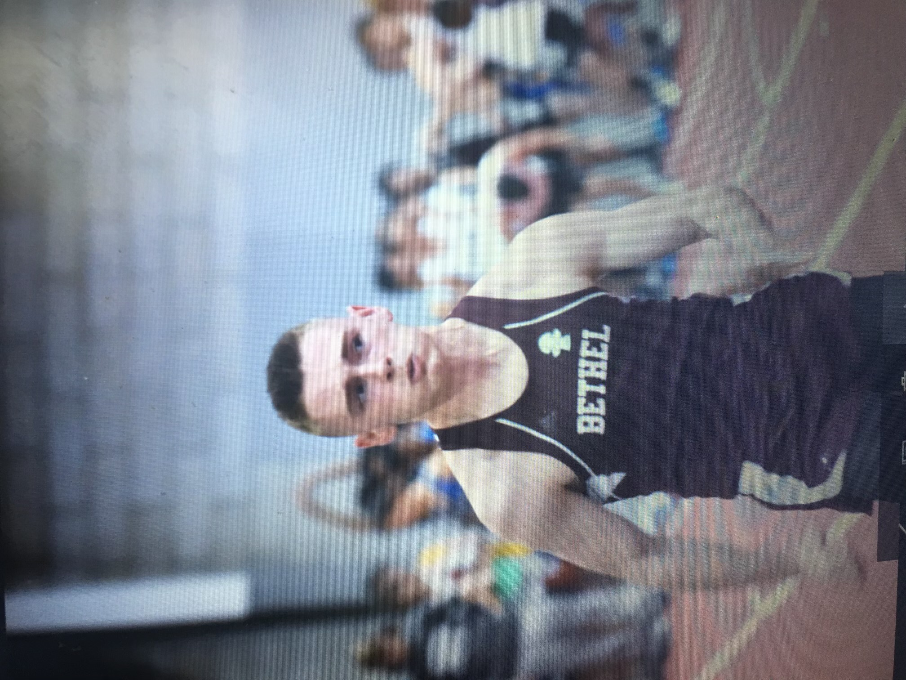

---------------------------------------------------------------------------------------------------------------------------------------------------------------------------------------------------------------------------------------------------------------------------------------------------------------------------------------------------------------------------------------------------------------------------------------------------------------------------------------------------------------------------------------------------------------------------------------------------------------------------------------------------------------------------------------------------------------------------------------------------------------------------------------------------------------------------------------------------------------------------------------------------------------------------------------------------------------------------------------------------------------------------------------------------------------------------------
---------------------------------------------------------------------------------------------------------------------------------------------------------------------------------------------------------------------------------------------------------------------------------------------------------------------------------------------------------------------------------------------------------------------------------------------------------------------------------------------------------------------------------------------------------------------------------------------------------------------------------------------------------------------------------------------------------------------------------------------------------------------------------------------------------------------------------------------------------------------------------------------------------------------------------------------------------------------------------------------------------------------------------------------------------------------------------
As you can see in the above videos, our relay team struggled with having clean handoffs (especially in big races). The Yale Invitational was our first big 4x400 race of the season and in it we dropped the baton and as a result came in second behind one of our rivals. When our coach saw us after the race she took our medals for second place away from us and said "you can have these back when you beat Weston". Funny enough when we raced Weston again in the conference championship we again dropped the baton and came in 4th as a result. Our coach was not happy with us as both races we could have won easily with the team we ahd had we not dropped the baton. However, in the state championship meet we finally made three clean handoffs and placed fith overall, setting our schools record for the fastest 4x400 time ever.